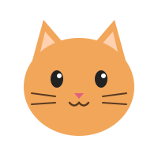

01
.css("속성", "값")
class명이 box-css인 요소의 CSS 속성을 jQuery로 적용합니다.
$(".box-css").css("background-color", "blue");
.box-css
02
.on("click") + toggleClass
버튼을 클릭할 때마다 active 클래스가 붙었다 떨어집니다.
$(".button").toggleClass("active");
03
.on("이벤트", function(){})
버튼 클릭 시 박스 배경색이 노란색으로, 박스에 마우스를 올리면 모서리가 둥글게 바뀝니다.
mouseenter → 24px / mouseleave → 8px
HOVER ME
04
.attr("속성", "값")
고양이 위에 마우스를 올리면 img의 src 속성을 바꿔 입을 벌린 이미지로 교체합니다. attr은 html 속성, css는 스타일 속성을 바꿀 때 사용합니다.
$(".cat_img").attr("src", "assets/cat_mouseopen.svg");

05
변수 + if / else
button_clicked 변수(그릇)에 true / false를 담아 두고, 값에 따라 clicked 클래스를 추가하거나 삭제합니다.
let button_clicked = false;
box-1
06
if / else if
button_status 값이 0 → 1 → 2 → 0으로 바뀌면서, 클릭할 때마다 너비 → 높이 → 원래 크기 순서로 변합니다.
button_status : 0
box-2
07
CSS 다중 class
AND(.chip.active) / INSIDE(.group .active) / OR(.tag-a, .tag-b)의 차이를 비교합니다. 칩을 클릭하면 active가 토글됩니다.
.chip.active {} / .group .active {} / .tag-a, .tag-b {}
AND
chip
chip active
INSIDE
group 안의 active
group 밖의 active
OR
tag-a
tag-b